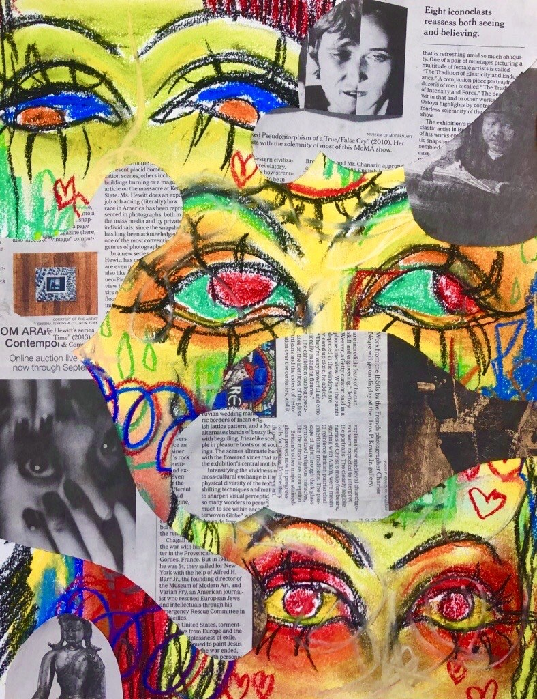

I used acrylic, pen, and newspaper to create this mixed media piece. I used stippling to shade, which proved to be time-consuming and challenging. I kept the shading rather minimal, as I wanted the face to stand out against the darker newspaper and black paint brush strokes, which were dry-brushed on.
I wanted to create something surreal with ink. I used a stippling technique to shade the piece. I created this piece to talk about the pressures to conform. People, especially women, are often urged to look a certain way and act a certain way. It's a strange back-and-forth, "too much or too little" conversation that proves fruitless.
For this, I wanted to make something a little more kitschy: something you might be able to see hanging up inside a house. For this reason, I used acrylic to paint solid, pastel colored shapes and black puffy paint to outline and create small shadows.
I drew this realism portrait of Martin Luther King Jr. using pencil as a practice of technical skills. It was a labor-heavy, arduous process.
